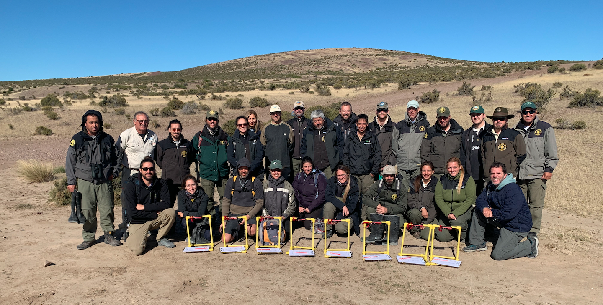

About MBON Pole to Pole
The Marine Biodiversity Observation Network
Pole to Pole of the Americas - MBON Pole to Pole - is a
Knowledge Sharing Network dedicated to the collection,
use and sharing of marine biodiversity data in a coordinated,
standardized manner leveraging on existing infrastructure managed by the
Global Ocean Observing System (GOOS; IOC-UNESCO), the GEO Biodiversity Observation
Network (GEO BON), and
the Ocean Biodiversity Information System (OBIS).
The MBON Pole to Pole aims to become a key resource for
decision-making and management of living resources across countries in
the Americas and support their reporting requirements of the
Intergovernmental Science-Policy Platform on Biodiversity and Ecosystem
Services (IPBES),
the Post-2020 Global Biodiversity Framework of the
Convention of Biological Diversity (CBD), and the UN 2030 Agenda for Sustainable
Development Goals (SDGs).
People

The MBON Pole to Pole workshop Implementing biodiversity monitoring of rocky
shores using photo-quadrats and Artificial Intelligence, at
Camarones, Chubut, Argentina, on March 27-31, 2023

The MBON Pole to Pole workshop Ocean Data Bootcamp - Gestão de dados de
monitoramento costeiro, at Vitória, Espiritu Santo, Brazil,
on July 11-14, 2022

The MBON Pole to Pole team at the 2nd Marine Biodiversity Workshop: from the Sea
to the Cloud, in Puerto Morelos, Mexico, 2019-04-05.

The MBON Pole to Pole team at the Marine Biodiversity Workshop: from the Sea to
the Cloud, in São Sebastião, Brazil, 2018-08-06.
Partner Organizations

Sponsors